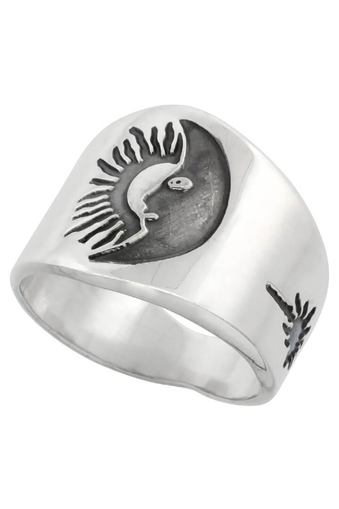
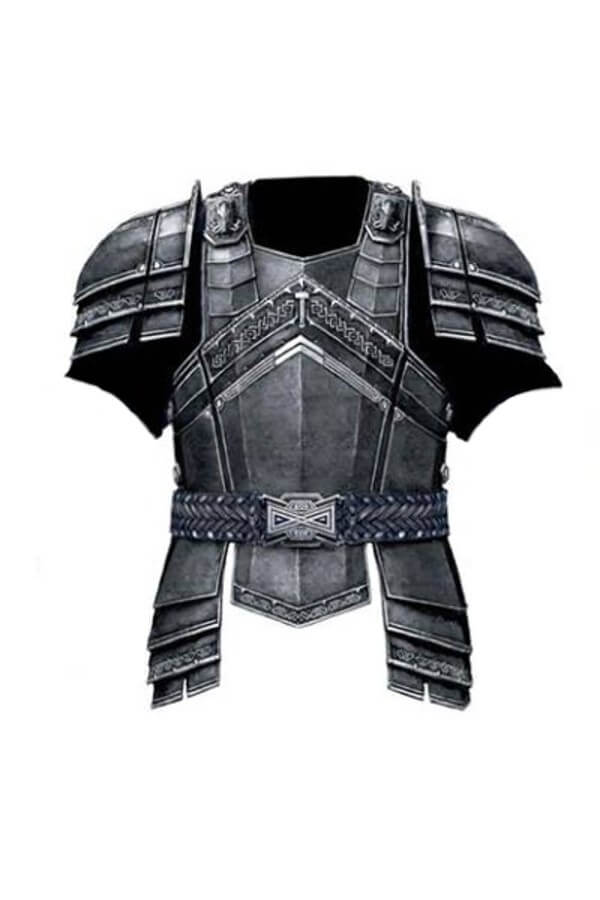
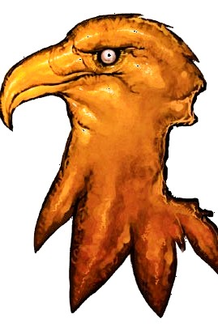
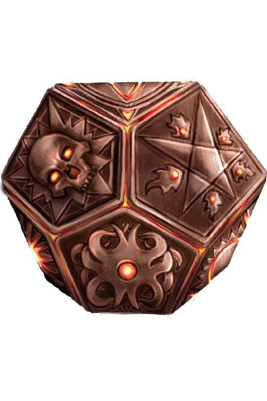
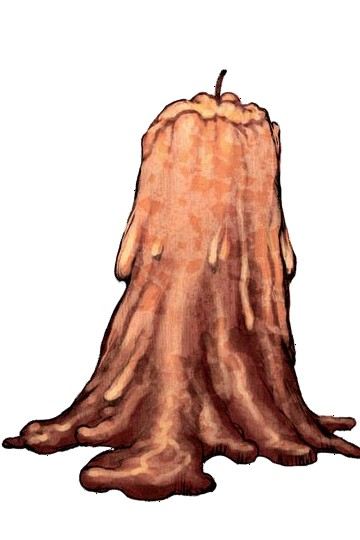
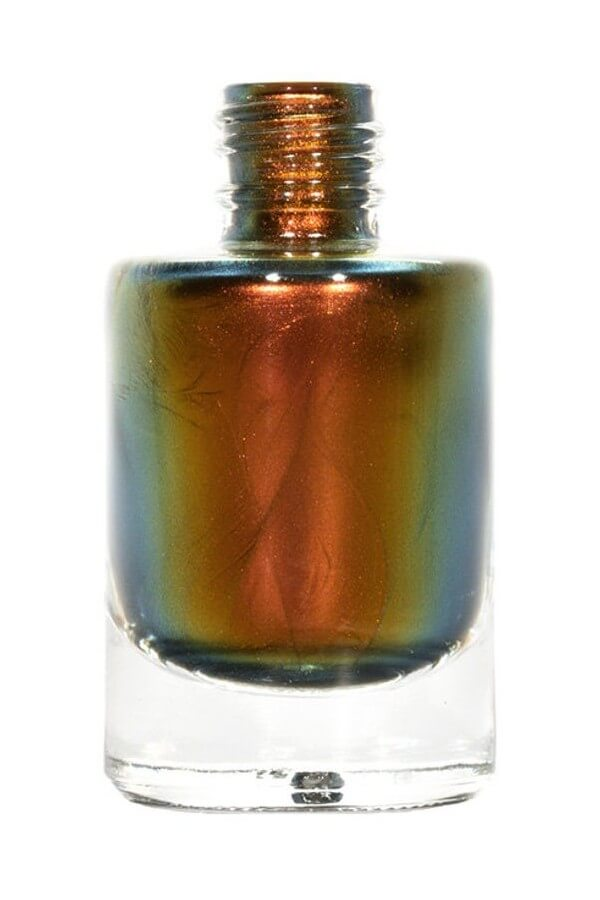
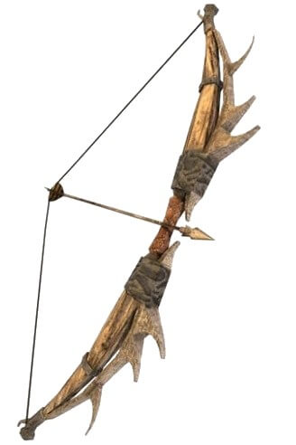
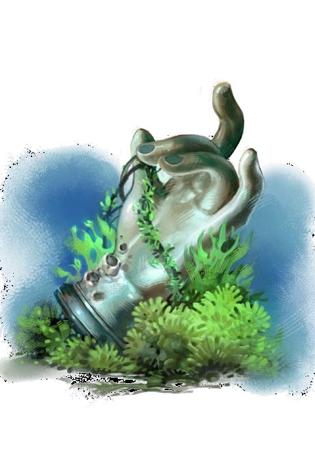

Ring of Shifting Alliances

This unique ring of protection +2 was worn by the famous missing amber privateer and pathfinder, Coriana. It is promised to protect the wearer and creatures within 10 feet from many of the keyed traps within Delvehaven's lower levels.
In addition to its regular powers, the wearer of the ring is always treated as the most favorable alignment for the purposes of being affected by spells and effects, such as a paladin's smite or the extra damage from an unholy weapon or spell.
Dawnhunter

This red-and-gold +1 light fortification breastplate is crafted and painted to look as if it had been carved from stone. It belonged to Commander Helmrunner of the Ever-Advancing Legion, said to have been one of the dwarven commanders to lead an army to the surface during the Quest for the Sky so long ago.
In areas of magical darkness, Dawnhunter radiates light with an effect spell level identicle to the spell creating magical darkness at a range of 5 ft. radius per spell level. This light counters and dispels magical darkness within its radius only. When worn by a dwarf, the dwarf gains damage reduction equal to the Dawnhunter's effective spell level that cannot be bypassed. Creatures with light sensitivity, light blindness, or a weakness to natural sunlight must roll twice and take the worse result against the Dawnhunter's fortification ability.
Dawnhunter can only be destroyed by a dwarf knowingly and willingly carrying it back to the depths where it was forged without the use of magic and living for 100 years in absolute darkness.
Morrowfall

The Morrowfall is one-half of the Aohl, an artifact gifted to the ancient Jaytirian Society following a sacred truce between their two feuding gods of millennia past. The Morrowfall is the remaining manifestation of the power of Easivra, a potent sun god now all but forgotten (it’s a DC 30 Knowledge [religion] check to recognize Easivra’s name or holy symbol).
The Morrowfall constantly emits daylight, as per the spell, and counts as a holy symbol of Easivra. In addition, by presenting it strongly and uttering Easivra’s name (a standard action), the Morrowfall can be used to cast the following spells at Caster Level 15th:
At Will – Disrupt Undead; 1/day – Searing Light; 1/Week – Sunbeam (DC 20)
Curse: The Morrowfall’s spells have no effect on a creature wielding the Totemrix. Once donned, the Morrowfall imparts a compulsion to join it with its counterpart, the Totemrix, and the owner becomes possessive of the artifact and will not voluntarily relinquish it preventing and it may not be removed except by first casting a remove-curse spell, though the compulsion and obsession remains. Each time the owner commits an evil act, they gain one negative level which cannot be overcome in any way while the Morrowfall is worn and returns immediately if the Morrowfall is donned again. They also gain 2 negative levels for each step their alignment is away from Lawful Good. If they are destroyed by these negative levels, they are purified of their sins, causing them to rise as an undead powered by positive energy and an Avatar of Easivra.
Avatar of Easivra Bonus: For 1 minute/ day, the player may sprout eagle wings made of pure light as a standard action, granting a fly speed of 60 feet with good maneuverability as the spell fly. Characters of faithful classes gain additional bonuses.
Clerics and inquisitors gain an extra domain from Easivra’s list. Oracles gain the Solar mystery as an additional mystery or a mystery of their choice if they already have the solar mystery, though their revelation progression remains unchanged; oracles only gain one final revelation and must choose between their available options. Warpriests gain weapon focus (Morningstar) as a bonus feat and may choose one additional blessing from Easivra’s list. Paladins gain extra lay on hands as a bonus feat; At first level, any weapon the paladin is proficient with (including unarmed strikes if they have improved unarmed strike) is treated as though it were masterwork and are treated as though under the effect of additional spells at the following levels: bless weapon at 4th, weapon of awe at 8th, greater magic weapon at 12th, and crusader’s edge at 16th; these effects are cumulative and operated as if cast by a caster with a caster level equal to the paladin’s caster level except with a permanent duration, and if dispelled they are renewed when the paladin regains their spells or after 24 hours.
Chelish Crux

This strange and baffling object appears to be a silver dodecahedron made of silver platted cold iron and measures about 5lbs and 6" in diameter. Each face of the crux is carved with a different rune, and when one looks upon the thing, the observer has the unsettling sensation that they can see either too many or too few sides at once. Rolling the Crux makes it abundantly clear that the object is hollow, with numerous objects within sliding around.
A Chelix Crux is similar to a bag of holding in that its interior space is larger than its exterior would suggest, and functions the same way as a bag of holding when determining how long a living creature can survive within or what happens when placed inside another extradimensional object, with the exception that its contents do not errupt when placed within an anti-magic field, it instead becoming temporarily impossible to open.
Once a particular Chelish Crux's combination is known, a character can open it automatically as a three-round action, though it cannot be opened by a creature with a weakness to cold-iron, silver, or evil-aligned weapons. Opened properly, the crux unfolds into a 2-foot-square flat sheet of metal, with the objects inside appearing in the center of the sheet. An unfolded Crux automattically folds as soon as a character attempts to bend any of the sheets four corners as a move-equivallent action, folding up around any objects that sit upon its face at the time. The sight of the Crux folding around an item appears as though the items are being crushed and snapped at odd angles, though when it is opened, the items inside are revealed to be unharmed.
A Chelish Crux can hold up to 200 lbs of objects, but the physical size of the contents is irrelevant. Objects that would exceed the Crux's capacity are instead gently pushed aside by the refolding action. A Chelish Crux has a hardness of 10 and 300 hit points which regenerate at a rate of 12 per round, and can be forced open with a strength check of 28. If forced open, the Crux is destroyed, dealing 12d6 + 24 points of fire damage to all creatures and objects within a 10-foot-radius, including to its contents (reflex DC 25 halves). This fire damage bypasses any immunities and resistances held by creatures who have damage reduction bypassed by silver, cold iron, or evil-aligned weapons and deals double damage to creatures of the extraplanar subtype.
Grave Tallow

These magical candles draw forth spirits from the mortal remains of long-dead creatures, allowing for a short seance with the deceased while the candle's wick burns.
In order to function, a grave tallow must be placed amid the physical remains of the body to be spoken with. These remains can be partial, or even just a handful of ash or grave dust, but a tottally destroyed body (such as the results of a destruction or disintegrate) doesn't leave enough material for a grave tallow to function. When list, the smoke rising from the candle grows thick and a ghostly shape similar to the creature's appearance manifests in the smoke.
At this point, the manifested spirit can speak, adhearing to the rules for a speak with dead, except the condition of the remains does not affect the spirits ability to communicate, and the spirit always manifests - though it is still limited to what it knew during life and answers may be brief, cryptic, or repetitive if the creature would have opposed the summoner in life. After five questions have been asked, the candle burns away and the smoke dissipates. Further more, once a body has been spoken with via a grave tallow it cannot be spoken with again via another candle, speak with dead, or similar ability including wish as the burning of the candle "burns out" the latent necromantic and spiritual energy left behind by the soul's parting from the world (this does not harm their actual soul). Communication with the departed after the use of a grave tallow instead requires bringing the deceased back from the dead.
Truecolor Dye

Horticulturists harvest this magical dye from the pulp of rare plants found only in the lushest regions of Tian Xia. Bisby first encountered this dye while visiting the royal courts of the Miracle Samurai during his early adventures as a Pathfinder. He made a point of returning with several bottles, and the decision served him well over the next several decades.
Truecolor dye produces vibrant colors, yet the actual color that registers varies according to the personality and temperment of the viewer—the viewer’s good, neutral, or evil alignment component determines the color he sees. Good viewers see a pleasing gold, while evil viewers see a rich blood red. A neutral viewer sees the dye as its actual color, a dull orange. Centuries ago, truecolor dye was used in the miracle courts of Tian Xia as a way to trick emissaries into revealing their alignments, but its secret has long since been disseminated on the eastern continent and lost its hidden value. A DC 25 Knowledge (geography or nature) check reveals the dye’s nature.
A single vial of truecolor dye is enough to coat a square foot of material, or to ink 5 pages of text. Once applied, truecolor dye is permanent, although it can be washed off with universal solvent.
Vintage Potions
A legendary retired Pathfinder-turned-brewer named Zoan “Vintage” Tyspar, whose own life was saved repeatedly by potions during his adventuring career, asked why it was necessary for the standard magical elixir to taste so incredibly awful. Tackling the problem with enthusiasm, he experimented with the means to safely mix his creations with a selection of fine wines and spirits. In time, Vintage even began bottling his successes in glass wine bottles, much to the delight of the other Pathfinders. Those that followed the works of Vintage came to know which brands and years symbolized the different magical effects available. Those who did not were on the receiving end of good-natured jokes.
Each full bottle of vintage potions contain a total of six doses. While these may be taken normally, when forcing a bottle down the throat of another creature, the entire bottle is used, and the creature gains the benefit of 1d6 doses (max equal to the constitution bonus of the creature, minimum of 1). The bottle may also be chugged as a full round action, allowing the creature to gain the benefits of a number of doses equal to 1 + the creatures CON modifier. If the potion is instantaneous, apply the effect of each dose separately; otherwise, each successive dose increases the effective caster level of the potion by the caster level of the dose.
Vintage’s methods of brewing and mixing magical reagents with alcohol have been lost to time, though PC’s with the Brew Potion feat may attempt to learn to duplicate his work in time.
Clasp of the Mind Scream

This strange device grants the ability to mentally communicate with others, yet proves difficult to control. It generates a constant field of mental static that grants the wearer a +1 bonus on Will saves against mind-affecting effects. The wearer may generate an attack similar to the spell shout (CL8 DC16), though the sound is mental, and thus does not affect items or creatures immune to mind-affecting effects, and its damage is not affected by sonic vulnerability, resistance, or immunity. In addition, as part of the attack, the wearer may make a DC 20 Charisma check to shape a specific noise or message of five words or fewer. These sounds are purely mental and not heard by any creature outside the area of effect.
The wearer may use this effect 1d3 times per day. The GM determines how many times per day the clasp of the mind scream can be used. If the wearer attempts to use the clasp beyond this number of times, he is affected by its effects and the clasp is inert for the next 24 hours.
Entwined Syrinx

This complex wind instrument is made of interwoven, gilded pipes. It is considered a masterwork musical instrument, granting a +2 bonus on all Perform (wind instrument) checks. The bonus is also added to the DC of any bardic performances made using the Entwined Syrinx.
Anytime anyone attempts to play the Entwined Syrinx, however, they must make a DC 15 Will save or be compelled to play a dirge of somber beauty. The dirge acts like the fascinate bardic performance — even if the character is not a bard or cannot use Perform (wind)—affecting every creature within 90 feet able to see and hear the character, including the musician playing the Entwined Syrinx. The DC to resist this effect is 12 + the performers Charisma modifier + 1/2 their bard level (if any); the +2 Perform bonus is already included in this DC. This effect persists and the musician continues to play for 1 hour, or until the performance is interrupted.
Felhart

Felhart is a +2 bane longbow crafted from the fiercely carved horns of at least two venerable stags and strung with a cord laced with silver. The designated foe that its bane effect functions against varies, being determined by the creature a wielder hates the most when the bow is first picked up (as decided upon by the GM). This bane effect remains the same for a wielder, regardless of how many times he’s used the bow. Thus, for one user it might be a bane vs. humanoids (humans), while for another it might be a bane vs. dragons. A wielder can do nothing to change the bow’s bane effect.
In addition, once per week, felhart’s wielder can summon a reliable steed as per the spell mount. This creature takes the form of a lean, swift white elk that, despite its almost ghostly appearance, possesses the same statistics as a horse. This creature allows felhart’s wielder to ride it, and serves loyally for up to 5 hours, vanishing at the end of this time. The mount will not allow any creature beside felhart’s wielder to ride it unless the weapon’s bearer succeeds at a DC 16 Handle Animal check. Even if this check succeeds, the mount only allows another rider to ride along with the weapon bearer. The elk never allows a strange rider to ride it alone.
Golden Dragon Kite

This painted silk kite depicts a shining golden dragon. In an area with 40 feet or more of vertical space and in conditions of light to moderate wind, a golden dragon kite can be unfolded and raised into the air as a full-round action. The user can direct the kite to move up to 100 feet from him in a single turn (but no farther). Three times per day, the kite can cast burning hands. The spell originates from the kite but acts as normal in all other ways. This spell can only be reproduced while the kite is flying, a process that takes 1 minute to achieve.
Hand of Abendigo

This nearly perfect pearl replica of a hand is attached to a gold chain and can be worn as an amulet. Once per day, the wearer can animate the hand as an immediate action. The hand attempts to grapple an adjacent foe of Medium size or smaller, using the wearer’s CMB. If it succeeds, the hand deals 1d4 non-lethal damage every round it maintains a grapple. If the grapple attempt fails or the victim escapes the grapple, the hand ceases its activity. If any creature within reach of the amulet (including the wearer) attempts to steal anything, the hand activates and attempts to choke the creature. If the amulet is not currently worn, it uses the victim’s own CMB and Strength to determine the attack bonus and damage.
Dream Journal of the Pallid Seer

This battered, leather-bound book looks like an aged and heavily worn notebook. Anyone reading the journal for an hour or more has strange dreams the following night, the details of which he cannot remember. The following day the character is fatigued. Reading the journal for a total of 24 hours or more causes the reader to have a prophetic dream wherein he sees his own death—though, as before, he cannot remember the details. If a character who has had this vision comes near death at any point afterward, at the moment he is about to die he may reroll any failed saving throw made within the last round or force an opponent to reroll a killing attack. The character must accept the result of the second roll, regardless of its outcome.
Once a character has had the opportunity to avert death, regardless of its success or failure, the journal provides no more benefit and never aids the character again.
The Dream Journal of the Pallid Seer is affected by a permanent magic aura that makes it appear to be nonmagical.
Kybwa'ka War Mask

This oversized wooden mask covers the face and extends down to a point at the wearer’s waist, covering most of his chest and abdomen. It is simplistically carved as a stylized, bestial face distorted with rage or nightmarish styles. The light wood provides little protection, yet is magically reinforced to grant a +1 armor bonus. In addition, once per day as a free action, the wearer can cause the mask to warp and contort ferociously, causing a single creature within 15 feet to make a DC 14 Will save or become frightened. This is a mindaffecting fear effect.
Talisman of the Orc Mother's Fury

This small statuette—carved from the tusk of a dire boar, chunks of twisted metal, or some manner of dark stone—is a simplistic depiction of a pregnant deity, fiend, or orc. Dark stains mark the face of the crude icon, typically smears of a fallen orc’s blood. A simple strand of leather affixes the amulet around the neck.
The figurine allows the wearer to act normally for a single round after being reduced to less than 0 hit points, as though he had the orc ferocity half-orc racial ability. A wearer with orc blood is instead treated as though he had the Diehard feat. If the wearer is of orc blood and already has the Diehard feat, he may act normally for an additional round after being reduced to below 0 hit points.
Whenever the wearer of the talisman is reduced to less than 0 hit points, the amulet weeps tears of blood. Should the wearer be slain, the talisman screams and shatters.